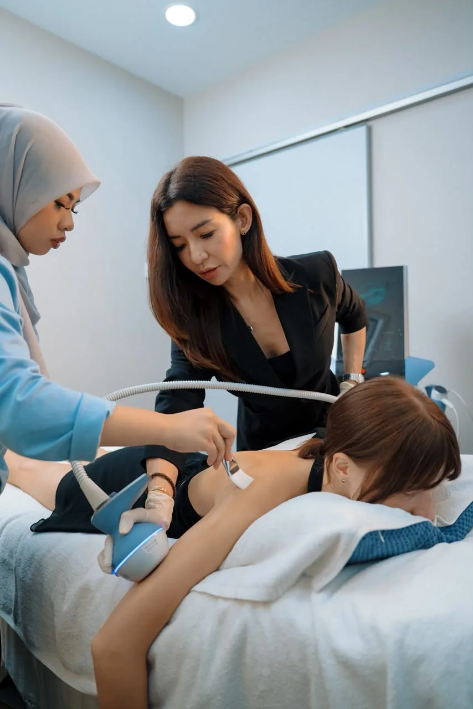
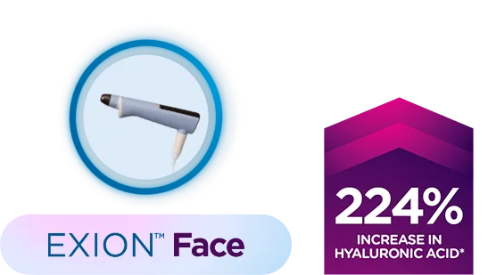
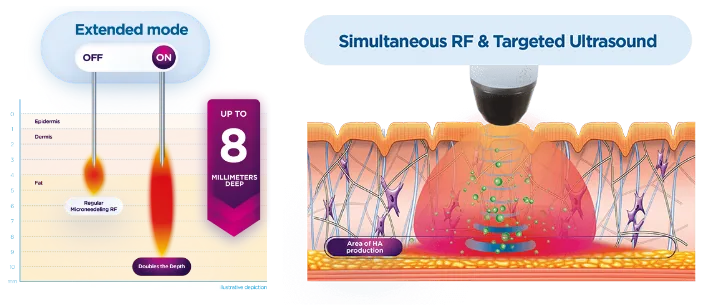
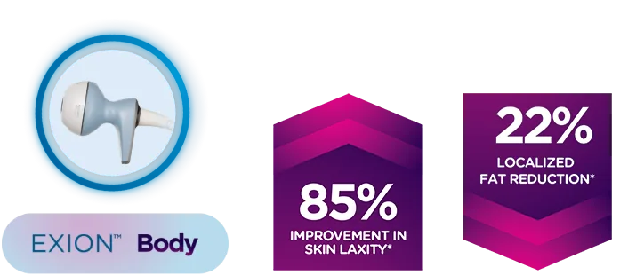
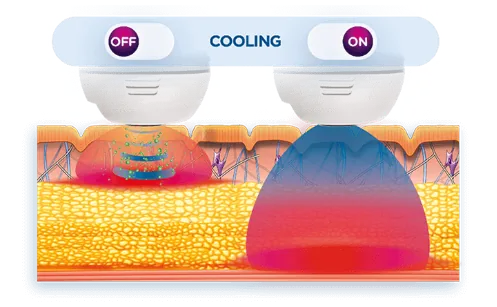
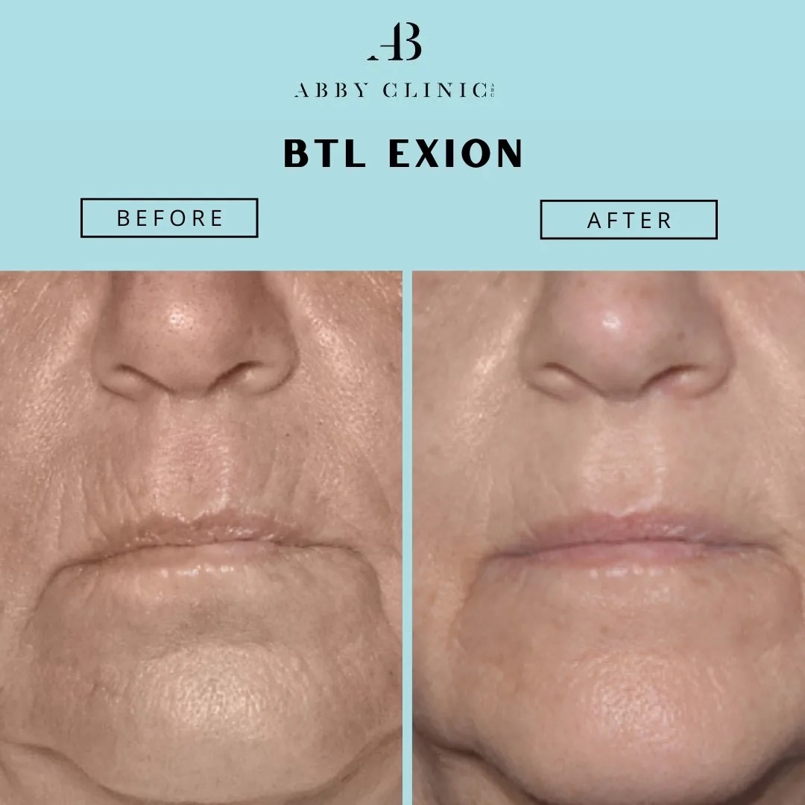
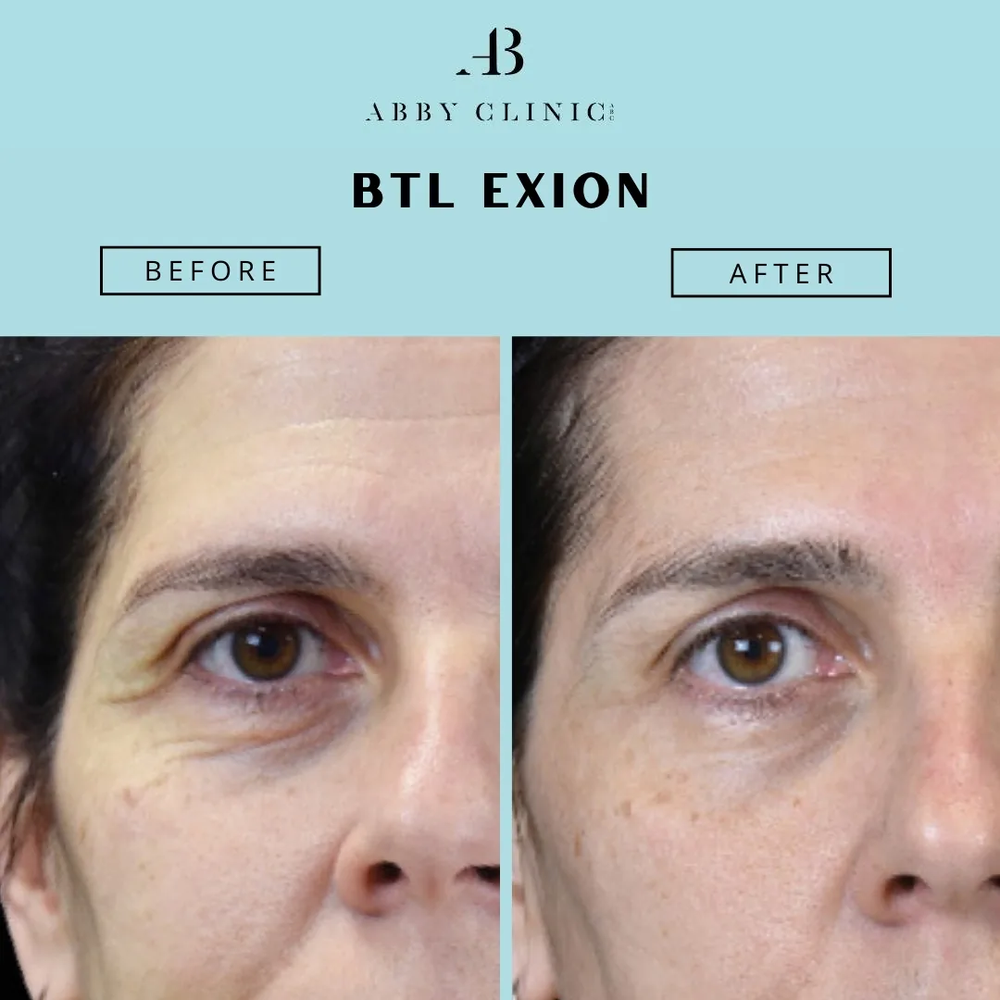
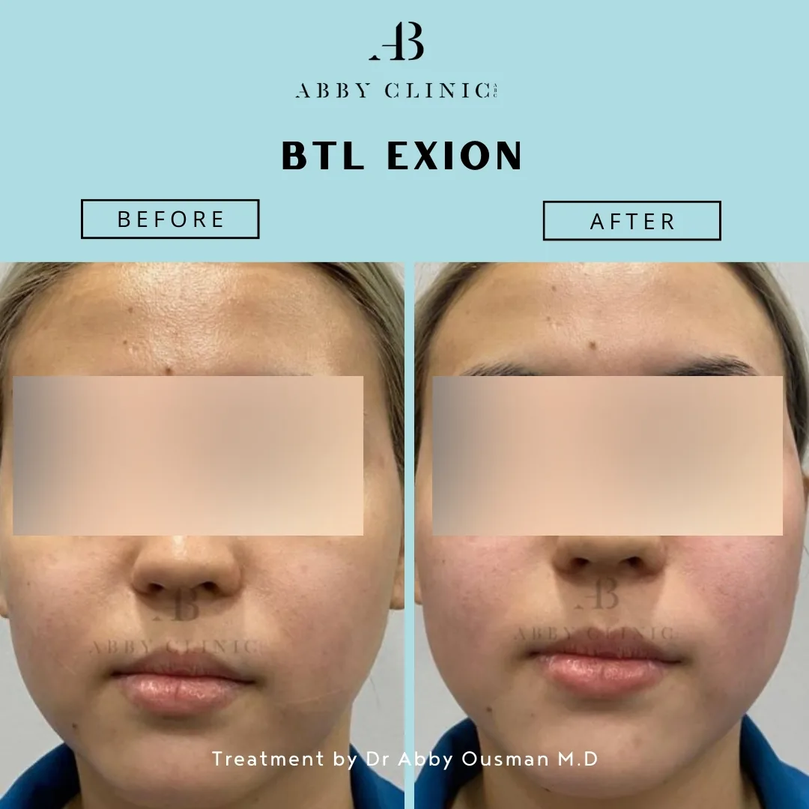
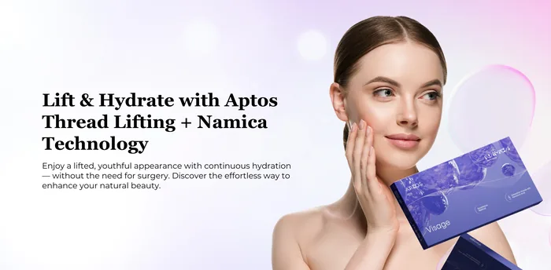

BTL Exion
In a world where beauty standards evolve, wrinkles, sagging skin, stubborn fat, and cellulite can challenge our confidence. BTL EXION introduces a transformative solution which not only addresses aesthetic concerns but also stimulates collagen production and promotes overall skin health for a radiant, youthful glow.
What is BTL Exion & How Can It Help You?
A 4-in-1 solution, BTL Exion, the latest aesthetic device at Dr Abby Clinic, is designed to redefine your skin and body. This FDA-cleared device is designed to provide a comprehensive treatment for individuals looking to appear radiant and youthful!
BTL Exion utilises a combination of monopolar radiofrequency and ultrasound technology. This approach is enhanced by AI to ensure precise and safe delivery of energy to the skin. The treatment targets fibroblasts—cells responsible for producing collagen, elastin, and hyaluronic acid, leading to enhancing your skin’s overall appearance and health.
Skin Concerns Treated
Face & body wrinkles for more youthful-looking skin.
Stubborn fat reduction.
Slimmer and more defined physique abdomen, flanks (love handles), thighs, arms, buttocks, and knees.
Skin tightening, skin elasticity and firmness.
Stimulates collagen production to firm sagging skin due to aging or significant weight loss.

Cellulite reduction.
The Technologies Behind BTL Exion
BTL Exion combines advanced technologies to deliver a comprehensive skin rejuvenation experience. Here’s how each technology contributes to the treatment:
Monopolar Radiofrequency (RF)
Monopolar RF technology delivers targeted heat deep into the skin through a single electrode. This controlled heat stimulates the body’s natural repair mechanisms, activating the skin’s fibroblasts—cells responsible for producing collagen and elastin. By encouraging the production of these key proteins, monopolar RF helps to enhance skin firmness and elasticity. Additionally, the heat assists in breaking down and replacing older collagen and elastin fibres, leading to a smoother, more resilient skin texture.
Ultrasound Technology
BTL Exion uses focused ultrasound waves to penetrate specific layers of the skin. This technology boosts the natural production of hyaluronic acid and elastin, which are essential for maintaining skin hydration and flexibility. The ultrasound waves work in tandem with the RF treatment, promoting overall skin rejuvenation and a youthful appearance.
Artificial Intelligence (AI)
AI technology plays a crucial role in BTL Exion by ensuring precise and personalised treatment. It adjusts the energy levels based on your individual skin needs, enhancing both the safety and effectiveness of the procedure. This intelligent adjustment allows for optimal results while minimising any discomfort.

Solutions Both for the Face & Body
Both Exion Face and Exion Body offer unique benefits tailored to different areas of the body, leveraging the same advanced technology to deliver rejuvenating results. Here is an overview:
Exion Face
Exion Face is a specialised treatment designed to address the unique needs of facial skin. This procedure uses the same advanced BTL Exion technology, tailored specifically for the delicate skin of the face. It combines monopolar radiofrequency (RF) and focused ultrasound to rejuvenate and revitalise facial skin, offering a comprehensive solution for a youthful appearance.
How It Works ?
Exion Face employs monopolar radiofrequency (RF) to deliver controlled heat deep into the skin. This heat stimulates the production of collagen and elastin, which are essential for maintaining a youthful and firm facial appearance. The treatment also uses focused ultrasound to enhance the natural production of hyaluronic acid, which helps to hydrate and plump the skin. With the added precision of Artificial Intelligence (AI), Exion Face ensures a personalised approach, adapting the energy delivery to your specific skin needs for optimal results.
Benefits
- Reduces the appearance of fine lines and wrinkles.
- Improves skin texture and elasticity.
- Enhances hydration and overall facial radiance.
- Minimally invasive with minimal downtime.
Exion Body
Exion Body is a targeted treatment designed to address skin concerns on the body. Utilising the same advanced BTL Exion technology, this procedure focuses on larger areas and deeper layers of skin to provide comprehensive body rejuvenation. It is ideal for those looking to improve skin texture, firmness, and overall appearance on various body areas.
How It Works ?
Similar to Exion Face, Exion Body uses monopolar RF to deliver controlled heat deep into the skin, stimulating the production of collagen and elastin. This results in tighter and smoother skin on larger body areas. The focused ultrasound technology complements this by boosting the natural production of hyaluronic acid, which helps maintain skin hydration and firmness. The integration of AI ensures that the treatment is customised to your body’s specific needs, enhancing both safety and effectiveness.
Benefits
- Tightens and smooths skin on larger body areas.
- Reduces the appearance of cellulite and skin laxity.
- Enhances skin hydration and elasticity.
- Non-invasive with minimal recovery time.




Experience the Benefits of BTL Exion
BTL Exion offers a range of remarkable benefits designed to enhance your skin’s appearance and health. Here are its advantages:

Comprehensive Skin Rejuvenation
BTL Exion is designed to tackle skin concerns like fine lines, wrinkles, sagging, and uneven texture. This treatment rejuvenates your skin, leaving it looking youthful and refreshed.

Enhanced Collagen and Elastin Production
The treatment naturally boosts collagen and elastin production, key proteins that enhance skin firmness and elasticity. This results in smoother, tighter, and more resilient skin.

Boosted Hyaluronic Acid Levels
BTL Exion boosts hyaluronic acid production, enhancing skin hydration and plumpness. This leaves your complexion more supple and radiant, bringing out your skin’s natural glow.

Non-Invasive and Minimally Disruptive
BTL Exion is a non-invasive treatment that delivers noticeable skin improvement with minimal downtime, so you can quickly get back to your daily routine.

Customised Treatment
The AI technology tailors the treatment to your unique skin needs, adjusting energy delivery for optimal and personalised results.

Suitable for Various Areas
BTL Exion provides customised treatments for both the face and body. This versatile solution professionally addresses a range of skin concerns.

Safe and Effective
Experience the safe and effective results of BTL Exion. Achieve optimal results with minimal discomfort in a trusted, professional setting.

Long-Lasting Results
BTL Exion offers long-lasting benefits for youthful, glowing skin. Regular treatments enhance your skin’s quality and radiance.
Considering BTL Exion? Discover If It’s the Treatment You Need!
At Dr Abby Clinic, we believe in personalised care to help you achieve your skin goals with confidence.
If you’re considering BTL Exion and want to find out if it’s the right fit for you, we invite you to book a consultation with our experienced LCP-certified practitioner at Dr Abby Clinic. We’re here to provide you with professional, personalised advice and support on your journey to healthier, more radiant skin. Here’s what you can expect during your consultation:


Consultation
At Dr Abby Clinic, your BTL Exion journey starts with a detailed consultation. We’ll review your skin concerns, medical history, and goals to customise your treatment. Our personalised approach ensures the best care tailored to your needs.

Confirming Your Eligibility
After your consultation, we’ll assess your skin type, health, and any contraindications to confirm your suitability for BTL Exion. We aim to provide you with all the necessary information and support to help you make an informed decision.

Begin Your Journey
Once we confirm BTL Exion is right for you, we’ll schedule your sessions and guide you on what to expect. Our team is committed to ensuring a comfortable, effective experience, so you can confidently start your journey to radiant skin at Dr Abby Clinic.
With BTL Exion, You Can Say Goodbye To Sagging Skin & Stubborn Fat
BTL Exion’s unique combination of radio frequency and targeted ultrasound technologies enables it to effectively target cellulite, sagging skin, and stubborn fat, delivering unparalleled results for your skin and body transformation. Take a look at some of the before-and-after photos.



Frequently AskedQuestions (FAQs)
Explore our BTL Exion with confidence—find the answers with our FAQs
BTL Exion is an advanced 4-in-1 aesthetic device that combines monopolar radiofrequency, ultrasound technology, and Artificial Intelligence (AI) to deliver comprehensive skin and body treatments. It’s FDA-cleared and designed to enhance your skin’s appearance by stimulating the production of collagen, elastin, and hyaluronic acid. The technology precisely targets fibroblasts—cells responsible for skin firmness and hydration—resulting in a more radiant and youthful look.
Yes, BTL Exion is a safe and effective treatment. It is FDA-cleared and uses advanced technology to ensure precise and controlled delivery of energy to the skin. The combination of monopolar radiofrequency, ultrasound, and AI technology allows for customised treatments that are tailored to your specific needs, ensuring both safety and efficacy.
The BTL Exion treatment is non-invasive and generally well-tolerated. During the procedure, you might feel a warm sensation as the monopolar radiofrequency and ultrasound technology work to stimulate your skin. The AI technology ensures that the energy levels are adjusted to your skin’s requirements, making the process comfortable and efficient.
The number of sessions required depends on your individual goals and skin condition. During your initial consultation, our team will provide a personalised treatment plan, including the recommended number of sessions to achieve optimal results. Most clients see noticeable improvements after a few sessions.
BTL Exion offers multiple benefits, including:
- Improved skin firmness and elasticity
- Reduction in fine lines and wrinkles
- Enhanced skin hydration and plumpness
- Smoother skin texture
- Reduction of cellulite and skin laxity on the body
BTL Exion is minimally invasive, and most clients experience little to no downtime. You may experience mild redness or swelling in the treated areas, but these effects are typically temporary and subside quickly. You can usually resume your daily activities immediately after the treatment.
Before your treatment, we recommend avoiding sun exposure and using any prescribed skincare products as directed. During your consultation, our team will provide specific pre-treatment instructions to ensure you’re fully prepared and to maximise the benefits of the procedure.
Post-treatment care is straightforward. We advise you to maintain a good skincare routine, stay hydrated, and avoid direct sun exposure to protect your skin. Our team will give you detailed aftercare instructions to help you achieve the best results and ensure your skin remains healthy.
Many clients notice improvements in their skin’s appearance within a few weeks of starting treatment. Optimal results typically become visible after a series of sessions, as the treatment stimulates the natural production of collagen, elastin, and hyaluronic acid over time.
BTL Exion is suitable for individuals looking to rejuvenate their skin and body, reduce cellulite, and achieve a more youthful appearance. During your consultation, we’ll assess your skin type, goals, and medical history to determine if BTL Exion is the right treatment for you.
Often paired with

Sublime RF

Profound Matrix™

PRX T33 Treatment

Picocare 450 Laser

Ultherapy

Fotona SP Dynamis

Gentle Yag Laser

Aptos Thread Lift

BTL Vanquish Me

Dermapen 4 Microneedling
Why ChooseDr Abby Clinic
Treatments are performed by LCP certified doctor and accredited therapists
Using FDA approved treatments
Transparent price and rate with no hidden or additional cost
Focusing on results and customer satisfaction
Featured Awards & Achievements
 Top 21 Best Aesthetic Clinics in Malaysia
Top 21 Best Aesthetic Clinics in Malaysia Harpers Bazaar Aesthetics Award 2019 & 20213
Harpers Bazaar Aesthetics Award 2019 & 20213 Top 20 Best Aesthetic Clinics in Klang Valley
Top 20 Best Aesthetic Clinics in Klang Valley Top 20 Best Aesthetic Clinics in Malaysia
Top 20 Best Aesthetic Clinics in Malaysia Top 10 Laser Hair Removal Clinic KL
Top 10 Laser Hair Removal Clinic KLRelated
articles
Why Collagen Matters More Than Ever—and How to Boost It Naturally with BTL Exion
17 January 2025
Collagen—the unsung hero of youthful, radiant skin—is the very foundation of our skin’s strength and elasticity.

Wrinkles and Fine Lines Creeping in Your Late 20s? Here’s How to Address Them
2 January 2025
As we move through our 20s, it’s easy to think that the signs of ageing are far off, but the reality is that wrinkles and fine lines can begin to appear earlier than expected.

Achieve a Slimmer Figure Naturally with These Easy Tips (Featuring BTL Exion!)
23 August 2024
Driven by the desire to appear slimmer and slender, many of us search for quick fixes and drastic measures that promise instant results.

Combatting Cellulite: How BTL Exion Offers a Solution
30 June 2024
Cellulite, often described as the dimpled, lumpy appearance of skin, affects millions of people worldwide, regardless of age, gender, or body type.
Experience Your Personalised Treatment Today
Great skin doesn’t happen by chance, it happens by appointment.
Book your slot now and let’s make it happen.